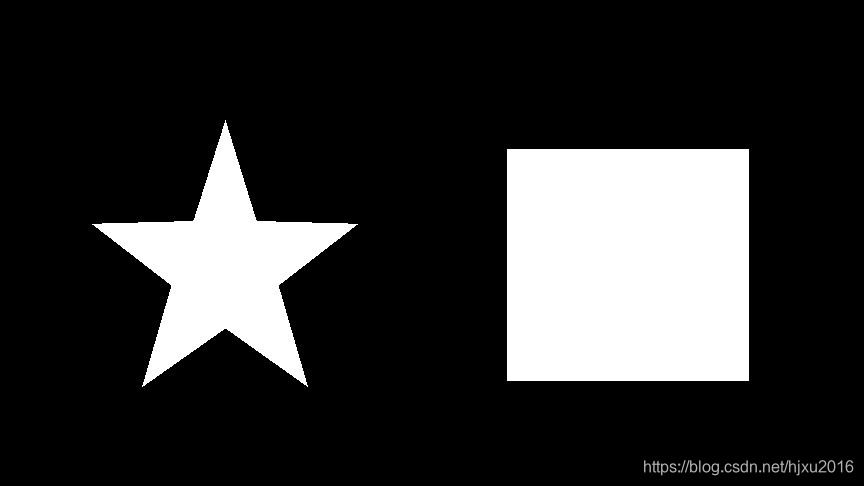
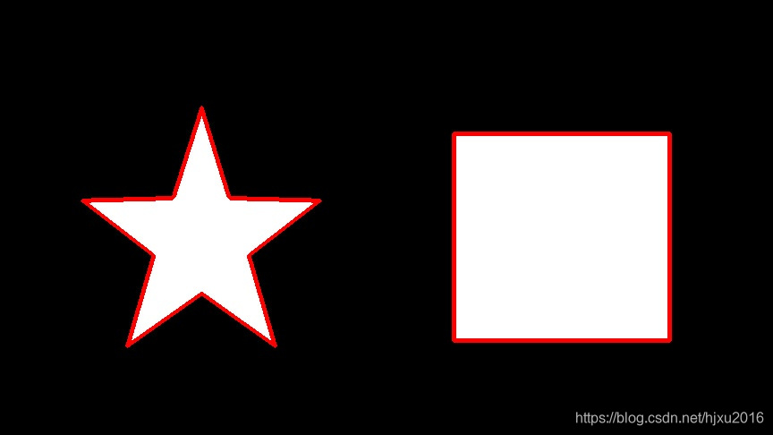

函数来查找检测物体的轮廓-CSDN博客_files/20201124032511.png "CSDN首页")
函数来查找检测物体的轮廓-CSDN博客_files/20240829093757.png) GitCode
GitCode
函数来查找检测物体的轮廓-CSDN博客_files/20231011044944.png)
函数来查找检测物体的轮廓-CSDN博客_files/20230815023238.png)
函数来查找检测物体的轮廓-CSDN博客_files/original.png)
函数来查找检测物体的轮廓-CSDN博客_files/newCurrentTime2.png)
函数来查找检测物体的轮廓-CSDN博客_files/articleReadEyes2.png)
函数来查找检测物体的轮廓-CSDN博客_files/tobarCollect2.png)
函数来查找检测物体的轮廓-CSDN博客_files/tobarCollectionActive2.png)
函数来查找检测物体的轮廓-CSDN博客_files/newHeart2023Active.png)
函数来查找检测物体的轮廓-CSDN博客_files/newHeart2023Black.png)
函数来查找检测物体的轮廓-CSDN博客_files/newArrowDown1White.png)
版权提示：本文参考自 http://blog.csdn.net/sunny2038/article/details/12889059，素材也都取自这里，本文仅做部分修改。
因为本文主要是参考sunny2038的这篇文档，如果转载请注意原出处。
这篇文章主要介绍在Python中使用OpenCV检测并绘制轮廓。
轮廓检测
轮廓检测也是图像处理中经常用到的。OpenCV-Python接口中使用cv2.findContours()函数来查找检测物体的轮廓。
实现
使用方式如下：
- import cv2
-
- img = cv2.imread("./test.jpg")
-
- gray = cv2.cvtColor(img,cv2.COLOR_BGR2GRAY)
- ret, binary = cv2.threshold(gray,127,255,cv2.THRESH_BINARY)
-
- contours, hierarchy = cv2.findContours(binary,cv2.RETR_TREE,cv2.CHAIN_APPROX_SIMPLE)
- cv2.drawContours(img,contours,-1,(0,0,255),3)
-
- cv2.imshow("img", img)
- cv2.waitKey(0)
-
需要注意的是cv2.findContours()函数接受的参数为二值图，即黑白的（不是灰度图），所以读取的图像要先转成灰度的，再转成二值图，参见4、5两行。第六行是检测轮廓，第七行是绘制轮廓。
结果
原图如下：

检测结果如下：

注意，findcontours函数会“原地”修改输入的图像。这一点可通过下面的语句验证：
- cv2.imshow("binary", binary)
- contours, hierarchy = cv2.findContours(binary,cv2.RETR_TREE,cv2.CHAIN_APPROX_SIMPLE)
- cv2.imshow("binary2", binary)
执行这些语句后会发现原图被修改了。
cv2.findContours()函数
函数的原型为
cv2.findContours(image, mode, method[, contours[, hierarchy[, offset ]]])python运行
opencv2返回两个值：contours：hierarchy。注:opencv3会返回三个值,分别是img, countours, hierarchy
参数
- 第一个参数是寻找轮廓的图像；
- 第二个参数表示轮廓的检索模式，有四种（本文介绍的都是新的cv2接口）：
cv2.RETR_EXTERNAL 表示只检测外轮廓
cv2.RETR_LIST 检测的轮廓不建立等级关系
cv2.RETR_CCOMP 建立两个等级的轮廓，上面的一层为外边界，里面的一层为内孔的边界信息。如果内孔内还有一个连通物体，这个物体的边界也在顶层。
cv2.RETR_TREE 建立一个等级树结构的轮廓。
- 第三个参数method为轮廓的近似办法
cv2.CHAIN_APPROX_NONE 存储所有的轮廓点，相邻的两个点的像素位置差不超过1，即max（abs（x1-x2），abs（y2-y1））==1
cv2.CHAIN_APPROX_SIMPLE 压缩水平方向，垂直方向，对角线方向的元素，只保留该方向的终点坐标，例如一个矩形轮廓只需4个点来保存轮廓信息
cv2.CHAIN_APPROX_TC89_L1，CV_CHAIN_APPROX_TC89_KCOS 使用teh-Chinl chain 近似算法
返回值
cv2.findContours()函数返回两个值，一个是轮廓本身，还有一个是每条轮廓对应的属性。
contour返回值
cv2.findContours()函数首先返回一个list，list中每个元素都是图像中的一个轮廓，用numpy中的ndarray表示。这个概念非常重要。在下面drawContours中会看见。通过
- print (type(contours))
- print (type(contours[0]))
- print (len(contours))
可以验证上述信息。会看到本例中有两条轮廓，一个是五角星的，一个是矩形的。每个轮廓是一个ndarray，每个ndarray是轮廓上的点的集合。
由于我们知道返回的轮廓有两个，因此可通过
cv2.drawContours(img,contours,0,(0,0,255),3) python运行和
cv2.drawContours(img,contours,1,(0,255,0),3) python运行分别绘制两个轮廓，关于该参数可参见下面一节的内容。同时通过
- print (len(contours[0]))
- print (len(contours[1]))
输出两个轮廓中存储的点的个数，可以看到，第一个轮廓中只有4个元素，这是因为轮廓中并不是存储轮廓上所有的点，而是只存储可以用直线描述轮廓的点的个数，比如一个“正立”的矩形，只需4个顶点就能描述轮廓了。
hierarchy返回值
此外，该函数还可返回一个可选的hiararchy结果，这是一个ndarray，其中的元素个数和轮廓个数相同，每个轮廓contours[i]对应4个hierarchy元素hierarchy[i][0] ~hierarchy[i][3]，分别表示后一个轮廓、前一个轮廓、父轮廓、内嵌轮廓的索引编号，如果没有对应项，则该值为负数。
通过
- print (type(hierarchy))
- print (hierarchy.ndim)
- print (hierarchy[0].ndim)
- print (hierarchy.shape)
可以看出，hierarchy本身包含两个ndarray，每个ndarray对应一个轮廓，每个轮廓有四个属性。
轮廓的绘制
OpenCV中通过cv2.drawContours在图像上绘制轮廓。
cv2.drawContours()函数
cv2.drawContours(image, contours, contourIdx, color[, thickness[, lineType[, hierarchy[, maxLevel[, offset ]]]]])python运行
- 第一个参数是指明在哪幅图像上绘制轮廓；
- 第二个参数是轮廓本身，在Python中是一个list。
- 第三个参数指定绘制轮廓list中的哪条轮廓，如果是-1，则绘制其中的所有轮廓。后面的参数很简单。其中thickness表明轮廓线的宽度，如果是-1（cv2.FILLED），则为填充模式。绘制参数将在以后独立详细介绍。
补充：
OpenCV-Python教程（11、轮廓检测）_sunny2038的专栏-CSDN博客_轮廓检测博客提到，可用下面的方式计算得到轮廓的极值点，如下
- pentagram = contours[1] #第二条轮廓是五角星
-
- leftmost = tuple(pentagram[:,0][pentagram[:,:,0].argmin()])
- rightmost = tuple(pentagram[:,0][pentagram[:,:,0].argmin()])
-
- cv2.circle(img, leftmost, 2, (0,255,0),3)
- cv2.circle(img, rightmost, 2, (0,0,255),3)
注意！假设轮廓有100个点，OpenCV返回的ndarray的维数是(100, 1, 2)！！！而不是我们认为的(100, 2)。切记！！！人民邮电出版社出版了一本《NumPy攻略：Python科学计算与数据分析》，推荐去看一下。
更新：关于pentagram[:,0]的意思
在numpy的数组中，用逗号分隔的是轴的索引。举个例子，假设有如下的数组：
a = np.array([[[3,4]], [[1,2]],[[5,7]],[[3,7]],[[1,8]]]) python运行其shape是(5, 1, 2)。与我们的轮廓是相同的。那么a[:,0]的结果就是：
[3,4], [1,2], [5,7], [3,7], [1,8] python运行这里a[:,0]的意思就是a[0:5,0]，也就是a[0:5,0:0:2]，这三者是等价的。
回头看一下，a的shape是(5,1,2)，表明是三个轴的。在numpy的数组中，轴的索引是通过逗号分隔的。同时冒号索引“:”表示的是该轴的所有元素。因此a[:, 0]表示的是第一个轴的所有元素和第二个轴的第一个元素。在这里既等价于a[0:5, 0]。
再者，若给出的索引数少于数组中总索引数，则将已给出的索引树默认按顺序指派到轴上。比如a[0:5,0]只给出了两个轴的索引，则第一个索引就是第一个轴的，第二个索引是第二个轴的，而第三个索引没有，则默认为[:]，即该轴的所有内容。因此a[0:5,0]也等价于a[0:5,0:0:2]。
再详细一点，a的全体内容为：[[[3,4]], [[1,2]],[[5,7]],[[3,7]],[[1,8]]]。去掉第一层方括号，其中有五个元素，每个元素为[[3,4]]这样的，所以第一个索引的范围为[0:5]。注意OpenCV函数返回的多维数组和常见的numpy数组的不同之处！
观察[[3,4]]，我们发现其中只有一个元素，即[3, 4]，第二个索引为[0:1]。
再去掉一层方括号，我们面对的是[3,4]，有两个元素，所以第三个索引的范围为[0:2]。
再次强调一下OpenCVPython接口函数返回的NumPy数组和普通的NumPy数组在组织上的不同之处。
参考资料：
1、《Opencv2 Computer Vision Application Programming Cookbook》
2、《OpenCV References Manule》
关于 Python opencv 使用中的 ValueError: too many values to unpack_jjddss的专栏-CSDN博客
opencv3可能会报too many values to unpack (expected 2)的错误
最近在OpenCV-Python接口中使用cv2.findContours()函数来查找检测物体的轮廓。
根据网上的 教程，Python OpenCV的轮廓提取函数会返回两个值，第一个为轮廓的点集，第二个是各层轮廓的索引。但是实际调用时我的程序报错了，错误内容如下：too many values to unpack (expected 2)
其实是接受返回值不符，如果你仅仅使用一个变量a去接受返回值，调用len(a),你会发现长度为3，也就是说这个函数实际上返回了三个值
- 第一个，也是最坑爹的一个，它返回了你所处理的图像
- 第二个，正是我们要找的，轮廓的点集
- 第三个，各层轮廓的索引
使用方式如下：
- import cv2
-
- img = cv2.imread("./test.jpg")
- gray = cv2.cvtColor(img,cv2.COLOR_BGR2GRAY)
- ret, binary = cv2.threshold(gray,127,255,cv2.THRESH_BINARY)
-
- contours, hierarchy = cv2.findContours(binary,cv2.RETR_TREE,cv2.CHAIN_APPROX_SIMPLE)
- cv2.drawContours(img,contours,-1,(0,0,255),3)
-
- cv2.imshow("img", img)
- cv2.waitKey(0)
运行时出现错误： ValueError: too many values to unpack
原因：由于版本（使用的时3.2.0.7）问题 cv.findContours返回值个数发生变化，变为3个。因此应该为
aa, ctrs, hier = cv2.findContours(im_th.copy(), cv2.RETR_EXTERNAL, cv2.CHAIN_APPROX_SIMPLE)python运行
假如第一个参数不使用，可写成
_, ctrs, hier = cv2.findContours(im_th.copy(), cv2.RETR_EXTERNAL, cv2.CHAIN_APPROX_SIMPLE)python运行
拓展：
ValueError: too many values to unpack 类错误，多为输入或者输出参数数量不一致导致。
参考：
函数来查找检测物体的轮廓-CSDN博客_files/vip-limited-close-newWhite.png)
函数来查找检测物体的轮廓-CSDN博客_files/vip-limited-close-roup.png)
函数来查找检测物体的轮廓-CSDN博客_files/tobarThumbUpactive.png)
函数来查找检测物体的轮廓-CSDN博客_files/like.png)
函数来查找检测物体的轮廓-CSDN博客_files/unlike-active.png)
函数来查找检测物体的轮廓-CSDN博客_files/unlike.png)
函数来查找检测物体的轮廓-CSDN博客_files/collect-active.png)
函数来查找检测物体的轮廓-CSDN博客_files/newCollectActive.png)
函数来查找检测物体的轮廓-CSDN博客_files/collectionCloseWhite.png)
函数来查找检测物体的轮廓-CSDN博客_files/comment.png)
函数来查找检测物体的轮廓-CSDN博客_files/share.png)
函数来查找检测物体的轮廓-CSDN博客_files/readCountWhite.png) 1881
1881
函数来查找检测物体的轮廓-CSDN博客_files/tel.png)
函数来查找检测物体的轮廓-CSDN博客_files/email.png)
函数来查找检测物体的轮廓-CSDN博客_files/cs.png)
函数来查找检测物体的轮廓-CSDN博客_files/closeBt.png)
函数来查找检测物体的轮廓-CSDN博客_files/4c0426677e2845468489674a1ecc892d_m0_64174141.jpg!1)
函数来查找检测物体的轮廓-CSDN博客_files/commentArrowDownWhite.png)
函数来查找检测物体的轮廓-CSDN博客_files/commentArrowLeftWhite.png) 被折叠的 条评论
为什么被折叠?
被折叠的 条评论
为什么被折叠?
函数来查找检测物体的轮廓-CSDN博客_files/iconPark.png) 到【灌水乐园】发言
到【灌水乐园】发言
函数来查找检测物体的轮廓-CSDN博客_files/pay-time-out.png)
函数来查找检测物体的轮廓-CSDN博客_files/weixin.png)
函数来查找检测物体的轮廓-CSDN博客_files/zhifubao.png)
函数来查找检测物体的轮廓-CSDN博客_files/jingdong.png)
函数来查找检测物体的轮廓-CSDN博客_files/pay-help.png)
函数来查找检测物体的轮廓-CSDN博客_files/recharge.png)
函数来查找检测物体的轮廓-CSDN博客_files/Group.png)
函数来查找检测物体的轮廓-CSDN博客_files/unfull.png)
函数来查找检测物体的轮廓-CSDN博客_files/full.png)
函数来查找检测物体的轮廓-CSDN博客_files/mobile.png)
函数来查找检测物体的轮廓-CSDN博客_files/qr_app.png)
函数来查找检测物体的轮廓-CSDN博客_files/qr_wechat.png)
函数来查找检测物体的轮廓-CSDN博客_files/qr_video.png)
函数来查找检测物体的轮廓-CSDN博客_files/totop.png)
函数来查找检测物体的轮廓-CSDN博客_files/quoteClose1White.png)